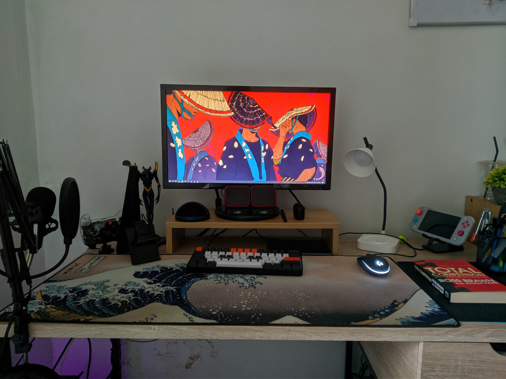
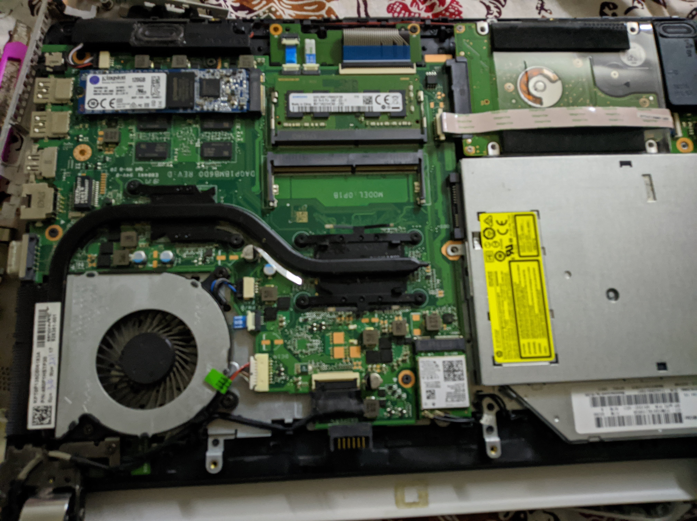

1 / 5

My PC in 2020
2 / 5

My PC currently
3 / 5

My old GT740 graphics card
4 / 5

My Desk Setup
5 / 5

Upgrading My Laptop's Ram
Ever since I was in high school, I took the interest in PC building.
I learned from Youtube on how to build a computer. I started my interest in pc building when I was 14 years old. I started my journey
by upgrading my home computer. I bought a graphics card using my savings. Building a PC can be a very interesting and rewarding hobby
for many people. These are the few main reasons why I am interested in building a PC.
Firstly, building a PC allows me to fully customize my computer to my specific needs and preferences.
On the other hand, when building a PC, I can choose each individual component myself, ensuring that I will get exactly what I want
and need.
Secondly, building a PC can also be a great way to save money. While it is true that buying a laptop can be more
convenient, it is often more expensive than building a PC myself. By purchasing each component separately and assembling the PC myself,
I can save quite a bit of money compared to buying a laptop. This is appealing to me because I am usually on a tight budget.
Finally, building a PC can be a very enjoyable and educational experience. Assembling a PC requires me to learn
about different computer components and how they work together. This can be a great way to learn more about computers and technology
in general.
Thus, building a PC can be a very interesting and a rewarding hobby. It allows for customization,
can save money, and can be a great learning experience.